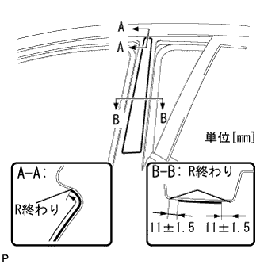

Center Pillar Stripe LH Installation |
| 1. Precautions for Applying Blackout Tape |
Application Temperature
When the ambient temperature is low (15°C or less), use an infrared lamp to warm the base (body application surface) and blackout tape to 20-30°C before performing the work. Also, when the temperature is high (35°C or more), cool them to 35°C or less before performing the work.
Work Before Application
If paint nibs, dust, etc. adhere to the base (body application surface), air will be trapped when the blackout tape is pressed on, causing poor appearance; therefore, remove paint nibs and also remove dust from the base, the area around the base and the blackout tape.
Handling Blackout Tape
Blackout tape deforms easily, so sandwich it between pieces of cardboard, etc. and store it in a dry, flat place.
Tips for Applying Blackout Tape (Squeegee Operation and Application Method - General Areas)
 |
To prevent air bubbles, lightly lift the part not being pressed by the squeegee so that it does not contact the base, tilt the squeegee at 40-50° (push direction) or 30-45° (pull direction), and press the tape on by pushing air outward at a slow, constant speed of 3-7cm/second with a pressing force of 20-30N{2-3kgf}.
 |
Tips for Applying Blackout Tape (Squeegee Operation and Application Method - Hemmed Areas)
For areas that cannot be pressed with the squeegee at one time, press them on in several steps. In particular, for small radii at hemmed areas, gradually adhere the tape in 2-3 steps using your finger or the thick end of the squeegee.
Tips for Applying Blackout Tape (Squeegee Operation and Application Method - Corners)
At corners, after peeling off the release paper, carefully adhere the tape with your fingertips.
To prevent poor appearance due to sharp tape corners, heat the blackout tape with a dryer before folding in each corner, and then fold in and adhere the corners in order.
Inspection After Application
If poor appearance occurs after application is complete, reapply using new blackout tape.
| 2. Install Center Pillar Stripe LH |
Clean Adhesive Surface (When Using Infrared Lamp)
Warm the blackout tape and adhesive remaining on the body with an infrared lamp.
Using a shop rag, etc., rub off the center pillar stripe and adhesive remaining on the body.
Clean the adhesive surface with white gasoline.
Clean Adhesive Surface (When Using Tape Removal Disc)
Set 8 discs in the holder, and install the removal disc to an air drill.
Using a removable disc, scrape off the center pillar stripe and adhesive remaining on the body.
Clean the bonding surface with white gasoline.
 |
Apply a new center pillar stripe LH in the position shown in the illustration.